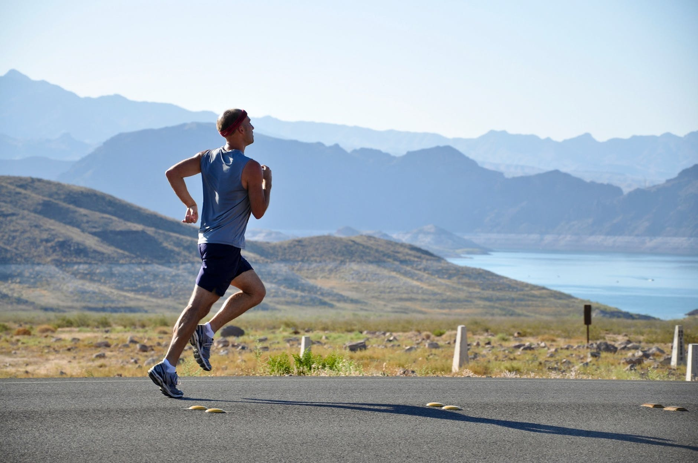

Sports and Life
← Back to Articles
The importance of sports lies in its supportive and effective role in developing a person's life, instilling hope in oneself, and giving a person a good feeling of their importance in life, and how necessary sports are in one's life. Sports are divided into several types; we will not cover all sports or some of them, but we will identify one single foundation for all sports — that is, running.
What Is the Benefit of Running?
Running is very important before doing any muscle exercise whatsoever, even if it is swimming; because running helps a person warm up the muscles and prepare them for muscular effort, which then helps the muscles bear weights or new exercises. Running greatly helps reduce any muscle cramps or other injuries that occur in sports.
Therefore, before starting to practice any sport, start by running for at least five minutes, and afterwards you can increase the number of minutes. After this, start with warm-up exercises (the Swedish warm-up), starting from the top to the bottom without neglecting any particular area.
How Much Should I Train or Practice Sports Per Week?
One day a week at two hours is enough. And if you have spare time, then three days a week, without training daily to give the muscles a chance to grow. Unless you are taking sports as a profession — then you must train daily while taking one day off for the body to rest.
If you liked this article, please share it with those who will benefit, and if you have a question about the topic, please comment.
The original article was published on the blog Mafaateeh Al-Hamdani | The Veteran by Mohammed Taher Al-Hamdani.